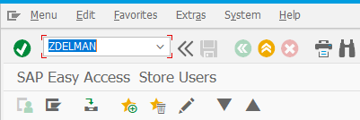
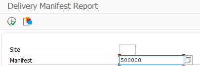
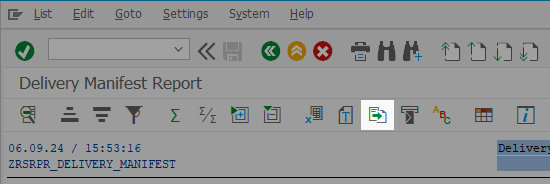
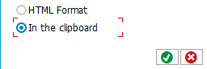

(1) OPEN SAP AND ENTER "ZDELMAN" INTO THE SHORTCUT BOX, THEN EXECUTE

(2) ENTER YOUR SITE NUMBER AND DELIVERY MANIFEST NUMBER (6 DIGITS), THEN EXECUTE

(3) CLICK ON THE LOCAL FILE OPTION IN THE TOOLBAR

(4) SELECT "IN THE CLIPBOARD" AND THEN CHECK.
PASTE THE RESULT INTO THE FIELD ON THIS PAGE
GOT IT!